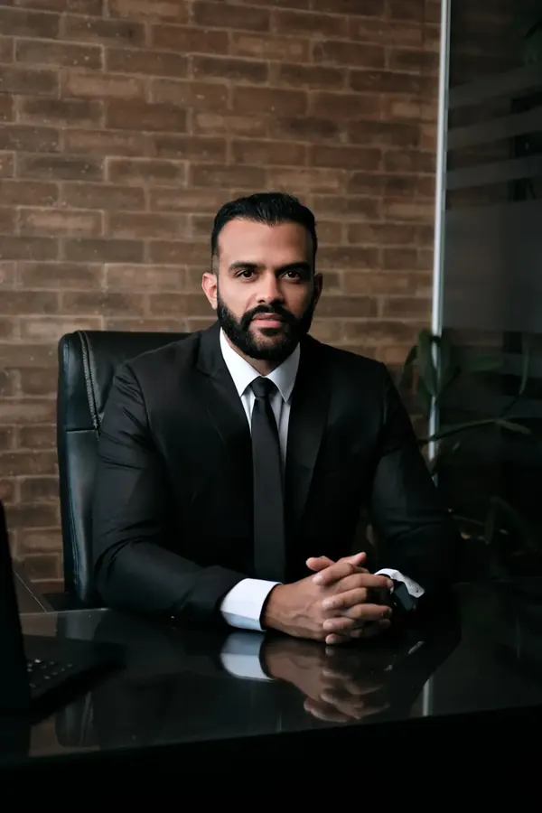

Como funciona
Do primeiro contato à análise do seu caso
Três passos, sem você precisar repetir a história.
- 1
Responda algumas perguntas
Tipo de golpe, valor e quando aconteceu. Leva menos de um minuto e é sigiloso.
- 2
Fale com a equipe no WhatsApp
Sua mensagem já chega pronta, com as respostas.
- 3
Receba a orientação
A equipe verifica prazos e documentos e explica qual caminho é possível no seu caso.

Responsabilidade do banco
Você fez o Pix enganado. O banco pode responder?
Pode, dependendo do caso. O Superior Tribunal de Justiça entende que os bancos respondem por fraudes ligadas às suas operações (Súmula 479). O que decide é como agiram o banco de quem pagou e o banco de quem recebeu o dinheiro.
- Transferência fora do seu padrão, sem bloqueio nem confirmação extra
- Conta que recebeu o dinheiro aberta com dados falsos
- Demora do banco para bloquear depois que você avisou
Atendimento liderado pelo Dr. Oscar Vieira, com atuação em Direito do Consumidor. Cada caso é analisado individualmente, sem promessa de resultado.
Avaliações
O que os clientes dizem no Google
“Deixo aqui a minha satisfação com os serviços prestados junto ao escritório, em especial ao Dr Oscar que além de competente, traz clareza aos processos e sendo muito paciente sobre as dúvidas e orientações.”
Viviane Bezerra · Avaliação no Google
“Fui muito bem atendida. O advogado exige tudo que eu preciso fazer. Deixou eu me expressar, foi um ótimo ouvinte. Recomendo para todos que estão precisando desse tipo de serviço.”
Eliane Ferrari · Avaliação no Google
“Gostaria de agradecer pelo excelente trabalho e profissionalismo. Sua dedicação, competência e atenção fizeram toda a diferença. É gratificante contar com um advogado tão comprometido e eficiente.”
Thaís Pontes · Avaliação no Google
Perguntas frequentes
Dúvidas de quem caiu em um golpe
O que devo fazer imediatamente se cair em um golpe do Pix?
Entre em contato com o seu banco o mais rápido possível para registrar a contestação (Mecanismo Especial de Devolução — MED) e faça um Boletim de Ocorrência detalhado. Em seguida, busque orientação de um advogado para avaliar a responsabilidade civil do banco pela falha na segurança da transação.
Fiz o Pix por vontade própria, enganado pelo golpista. Ainda tenho direito?
Ter feito a transferência induzido pelo golpista não impede, por si só, a análise da responsabilidade dos bancos. A Justiça examina se houve falha de segurança, como conta aberta com dados falsos ou movimentações fora do seu padrão que não foram bloqueadas. Cada caso é analisado individualmente.
O banco negou a devolução pelo MED. Ainda dá para fazer algo?
Em muitos casos, sim. A negativa do banco não encerra o assunto: é possível registrar reclamação no Banco Central e avaliar se cabe ação contra o banco de origem, o banco que recebeu o dinheiro ou os dois.
Vocês atendem na minha cidade?
Sim. A Vieira & Marques atende clientes de todo o Brasil. O primeiro contato é feito pelo WhatsApp, com a equipe de atendimento.
É possível reaver o dinheiro perdido em fraudes eletrônicas?
Em muitos casos é possível. A jurisprudência atual frequentemente responsabiliza as instituições financeiras quando há falhas nos sistemas de segurança que permitiram a abertura de contas de laranjas ou transferências atípicas. Cada caso deve ser analisado individualmente.
Como identificar e combater um empréstimo consignado fraudulento?
Fique atento a descontos desconhecidos no seu contracheque ou benefício do INSS, especialmente parcelas pequenas com prazos longos. Se você não contratou o empréstimo, trata-se de fraude passível de anulação e de pedido de indenização por danos morais.
Quanto tempo o processo de recuperação pode levar?
O tempo varia de acordo com a complexidade do caso e o andamento processual, mas buscamos sempre medidas de urgência (como tutelas antecipadas) logo no início para tentar acelerar a proteção do seu patrimônio.
Por que vocês não atuam em casos com prejuízo abaixo de R$ 10 mil?
Em valores mais baixos, os custos e o tempo de um processo judicial costumam superar o que seria efetivamente recuperado, tornando a ação pouco vantajosa para quem foi lesado. Por isso, concentramos nossa atuação em casos com prejuízo acima de R$ 10 mil, onde o esforço processual compensa o resultado buscado.
Quanto antes você agir, melhor
Prazos e pedidos ao banco fazem diferença. Responda as perguntas e fale com a equipe.